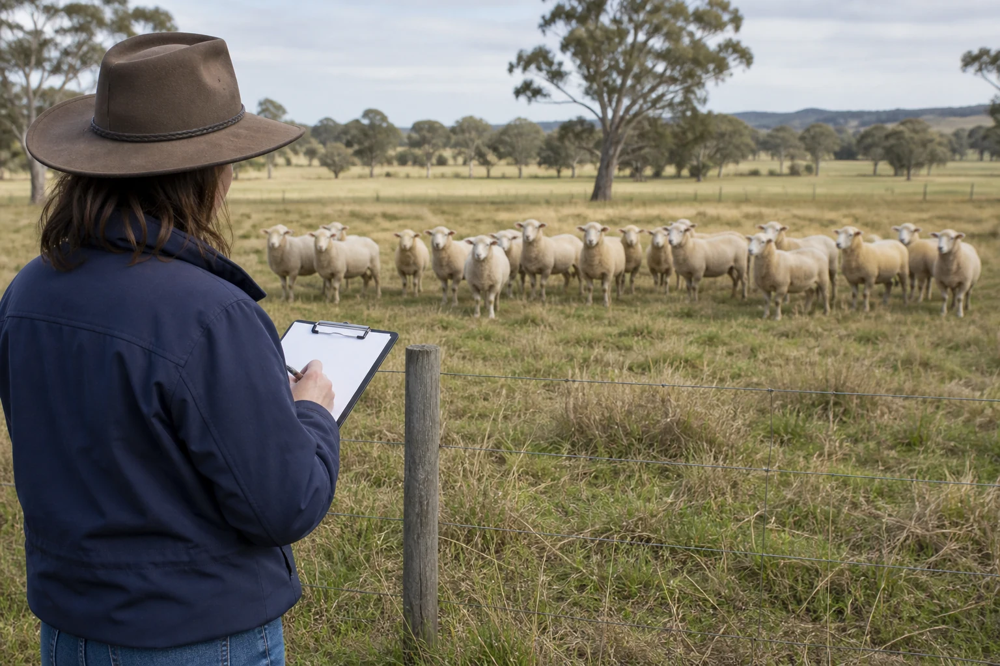

Learning purpose
Use a repeatable observation pattern and choose when, how and to whom a concern is reported.
Task 6 · Lesson 2 of 4
Use a repeatable observation pattern and choose when, how and to whom a concern is reported.
Learning purpose
Use a repeatable observation pattern and choose when, how and to whom a concern is reported.
Success criteria
Learning boundary
Supplementary learning and formative practice only. Current RTO assessment, local procedures and authorised supervision control real work.

Routine monitoring uses a defined schedule, identified animals or groups and consistent record fields. The authorised workplace plan sets the frequency, observation point, baseline and people responsible for each check.

Consistency helps reveal change over time, but no schedule guarantees that an issue will wait until the next check. Unexpected observations are reported through the current escalation path when they arise.
A learner considers the observable change, how many animals are involved, whether the pattern is new or worsening, and whether the current plan identifies a prompt reporting trigger. These facts support escalation.
The learner does not invent a clinical severity rating. Where urgency is uncertain, communicate the evidence immediately to the designated person and let the authorised process determine the response.
A strong first report answers who or which group, what changed, when and where it was observed, what context matters and which source or earlier record was used for comparison.
Avoid lengthy theories that bury the observation. State uncertainty openly, including whether an identifier, duration, baseline or environmental detail still needs verification by the designated authorised person.
Escalation is safer when the receiver acknowledges the message and clarifies the next authorised action. If the usual contact is unavailable, use the current workplace escalation route rather than choosing an unofficial substitute.
The website cannot name a property's contacts, emergency sequence or veterinary arrangements. Those details belong in the current induction, workplace plans and direct supervisor directions for that specific property.
Fictional worked example
Monitoring context: On fictional Red Gum Farm, Liam conducts an approved record-review exercise and finds that three entries for group K show a repeated reduction in attendance at the recorded water-point check, while the fourth entry is blank. Decision and reason: The pattern deserves prompt authorised review, but the blank entry means he cannot claim four consecutive changes or identify a cause. Safe action: Liam reports the three confirmed entries, missing field, dates and group identifier. Result: The supervisor checks the source records and directs follow-up. Next check or record: Liam records the acknowledgement and avoids filling the blank from memory.
After reporting, record who received the concern, when it was acknowledged and any direction that belongs within the learner's role. Use exact enterprise language where the authorised form supplies it.
Do not write that the concern is resolved unless the current process confirms that outcome. A referral may remain open while authorised people gather further information.
Monitoring records can be reviewed for missing identifiers, inconsistent fields, unexplained gaps, different observation conditions and vague language. Improving record quality supports future comparison and communication.
A high quiz score does not show that a learner can monitor livestock independently or meet assessment requirements. Practical performance remains controlled, supervised and assessed through the current RTO process.

External media loads only after you choose it.
Source-linked video
Why watch: Connect regular observation with early escalation without asking a learner to diagnose.
Watch for: Which routine observations could reveal an early change without requiring a learner to diagnose it?
Formative practice
Each option explains the consequence. These answers save only on this device.
Written application
Apply and keep a learning record
Examine four fictional monitoring entries, identify the reliable trend, mark missing or non-comparable fields and compose a twenty-second escalation message. Do not infer a cause or close the concern yourself.
Learning record: A supplementary trend audit and closed-loop communication script for teacher feedback.
Lesson responses and the activity are formative learning only. Formal sufficiency and competence remain with the current RTO process.
Source basis: AHCLSK222 Release 1 requirements to check livestock regularly, recognise and report poor health, injury or abnormal behaviour, monitor post-treatment and report abnormalities. Current workplace schedules, contacts, thresholds and response pathways remain authoritative.